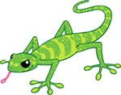

What is object focus anyway?
Object focus questions
Look at the following sentences. In the box below each sentence, identify the subject/actor (person, animal, or object that performs the main action in the sentence).
These sentences are called object focus or passive sentences, because the object (person, animal or thing upon which the verb is performed) comes first.
In simple terms, an active/subject focus sentence is structured as ‘someone does something’, for example: ‘the cat sat on the mat’. A passive/object focus sentence is structured as, ‘something is done by someone/something’, for example: ‘the mat was sat on by the cat’.
In Indonesian, passive/object focus sentences are more common than they are in English. It may sound unnatural to say, ‘the mat was sat on by the cat’ in English, but this structure is used frequently in Indonesian.
Can you see the difference?
In the text box below, explain in your own words the difference between a passive (object focus) and an active sentence. Use two different examples of sentences to aid your explanation.
Bonus challenge! Can you think of texts or situations where it is more common in English to hear or see passive (object focus) sentences?
Bingung? Tidak apa². There will be plenty more opportunities to practise this. Don’t expect to understand it all the first time, but you will get there!
Are the following sentences active (subject focus) or passive (object focus)? Click on the button you think indicates the correct answer.
 Text alternative
 |